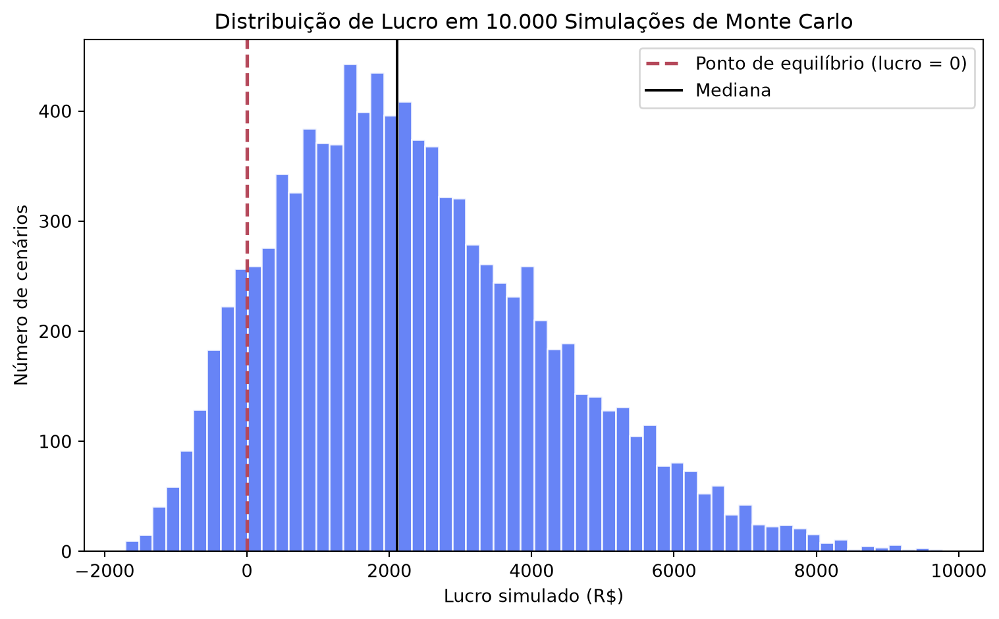

Sua Campanha de Ads Vai Dar Lucro? Qual a relação com Simulação de Monte Carlo
python
simulação de monte carlo
marketing analytics
mídia paga
alfabetização de dados
data literacy
Author
Jobenil Júnior
Published
September 12, 2026
“Vamos investir R$ 5 mil em Meta Ads. Vai dar lucro?” Se você já trabalhou com mídia paga, sabe que essa pergunta quase sempre recebe uma resposta de planilha: pega-se o Custo por Clique (CPC) médio histórico, a Taxa de Conversão (CR) média e o Ticket Médio (AOV), multiplica-se tudo e sai um número único, redondo, convincente. O problema é que esse número é uma ficção estatística: na vida real, CPC, CR e AOV nunca ficam parados na média, eles oscilam todo santo dia. E é exatamente aí que a Simulação de Monte Carlo pode ajudar transformando uma resposta única e frágil em uma distribuição de probabilidades.
🎯 O Problema: A Média Esconde o Risco
Imagine que o histórico da conta mostra CPC médio de R$ 1,50, CR média de 1,5% e AOV médio de R$ 180. Multiplicando esses três números por um orçamento de R$ 5.000, chega-se a uma projeção de lucro única, digamos, R$ 3.000. Essa conta tem um problema grave: ela finge que CPC, CR e AOV vão se comportar exatamente na média todos os dias da campanha, o que quase nunca acontece.
Na prática, o CPC varia com a concorrência do leilão de anúncios, a CR varia com o público que chegou naquele dia, e o AOV varia com o mix de produtos vendidos. Um único número de “lucro esperado” não diz nada sobre o risco de a campanha dar prejuízo.
Uma média é uma aposta disfarçada de certeza. Ela mostra um cenário possível, mas esconde todos os outros.
🎲 O Que é a Simulação de Monte Carlo
Pense em um cassino: ninguém sabe o resultado de uma única rodada da roleta, mas rodando ela milhares de vezes, surge um padrão de probabilidades bem definido. A Simulação de Monte Carlo aplica essa mesma lógica aos negócios: em vez de usar um valor fixo para cada variável incerta (CPC, CR, AOV), define-se um intervalo plausível para cada uma (um mínimo e um máximo, baseados no histórico da conta) e sorteia-se, aleatoriamente, milhares de combinações possíveis dessas variáveis.
Cada sorteio gera um cenário completo de campanha, com seu próprio resultado de lucro. Ao final de 10 mil sorteios, em vez de uma previsão única, temos uma distribuição inteira de resultados possíveis e, com ela, a probabilidade real de a campanha dar lucro ou prejuízo.
Simulação de Monte Carlo não prevê o futuro, ela mapeia todos os futuros plausíveis e diz o quão provável é cada um.
🐍 Simulando 10.000 Cenários de Campanha em Python
Vamos simular uma campanha de tráfego pago com orçamento fixo de R$ 5.000, variando três fontes de incerteza dentro de intervalos observados no histórico da conta: o CPC entre R$ 1,20 e R$ 2,20 (o leilão de anúncios pode encarecer bastante em dias de alta concorrência), a Taxa de Conversão entre 1,0% e 1,8%, e o Ticket Médio (AOV) entre R$ 130 e R$ 215 (com R$ 175 como valor mais provável, daí a distribuição triangular).
import numpy as npimport pandas as pdnp.random.seed(2026)n_simulacoes =10_000orcamento =5_000# CPC: custo por clique varia entre R$ 1,20 e R$ 2,20cpc = np.random.uniform(1.20, 2.20, n_simulacoes)# CR: taxa de conversão varia entre 1,0% e 1,8%cr = np.random.uniform(0.010, 0.018, n_simulacoes)# AOV: ticket médio varia entre R$ 130 e R$ 215, com R$ 175 mais provávelaov = np.random.triangular(130, 175, 215, n_simulacoes)cenarios = pd.DataFrame({"cpc": cpc, "cr": cr, "aov": aov})cenarios.head()
cpc
cr
aov
0
1.419346
0.015604
200.044732
1
1.613012
0.011930
173.026201
2
2.176635
0.010579
159.297801
3
1.288899
0.011891
169.976487
4
1.679290
0.016630
182.900135
Cada linha dessa tabela é um cenário de campanha plausível, não o cenário médio, mas um entre milhares de combinações possíveis que a conta pode viver ao longo do mês.
💰 Calculando Receita, Custo e Lucro em Cada Cenário
Com os três ingredientes sorteados, a conta é direta: o orçamento dividido pelo CPC dá o número de cliques; os cliques multiplicados pela CR dão o número de conversões (vendas); as conversões multiplicadas pelo AOV dão a receita; e a receita menos o orçamento investido dá o lucro.
Repare na dispersão: o lucro simulado varia de cenários bem negativos a cenários bastante positivos, é exatamente essa variação que uma previsão de ponto único jamais mostraria.
📊 Visualizando a Distribuição de Lucro
import matplotlib.pyplot as pltplt.figure(figsize=(8, 5))plt.hist(cenarios["lucro"], bins=60, color="#4C6EF5", alpha=0.85, edgecolor="white")plt.axvline(0, color="#B5495B", linestyle="--", linewidth=2, label="Ponto de equilíbrio (lucro = 0)")plt.axvline(cenarios["lucro"].median(), color="black", linestyle="-", linewidth=1.5, label="Mediana")plt.xlabel("Lucro simulado (R$)")plt.ylabel("Número de cenários")plt.title("Distribuição de Lucro em 10.000 Simulações de Monte Carlo")plt.legend()plt.tight_layout()plt.show()

O histograma é o retrato completo do risco da campanha: quanto mais barras à esquerda da linha tracejada (lucro zero), maior a chance de prejuízo; quanto mais barras à direita, maior a chance de lucro.
📈 Traduzindo a Simulação em Probabilidade de Negócio
print(f"Probabilidade de a campanha dar lucro: {prob_lucro:.1%}")print(f"Probabilidade de a campanha dar prejuízo: {1- prob_lucro:.1%}")
Probabilidade de a campanha dar lucro: 90.1%
Probabilidade de a campanha dar prejuízo: 9.9%
Esse é o tipo de número que muda uma reunião de aprovação de orçamento: em vez de “a projeção é de R$ 2 mil de lucro”, o time de marketing chega com “existe cerca de 90% de chance de a campanha ser lucrativa, mas no pior cenário plausível (P5), ainda podemos ficar no vermelho”. A decisão deixa de ser sobre um número único e passa a ser sobre um nível de risco aceitável.
🚀 Da Estatística à Estratégia de Marketing
Esse mesmo raciocínio se aplica a qualquer decisão de investimento em mídia paga: aprovar (ou não) o orçamento de um lançamento, comparar dois canais com perfis de risco diferentes, ou definir o CPC máximo que a conta ainda consegue pagar sem virar prejuízo na maioria dos cenários. A simulação não elimina a incerteza, ela é inerente ao leilão de anúncios, mas transforma essa incerteza em um número que um diretor de marketing consegue usar para decidir com os olhos abertos.
🎯 Em resumo:
Etapa
O que fizemos
Por quê
Definição dos intervalos
CPC, CR e AOV com mínimo, máximo (e moda, no AOV)
Substituir a média fixa por um intervalo plausível de incerteza
Simulação
10.000 sorteios aleatórios com np.random
Gerar milhares de cenários de campanha, não apenas um
Cálculo do lucro
Cliques → conversões → receita → lucro, por cenário
Traduzir cada combinação de variáveis em resultado financeiro
Visualização
Histograma da distribuição de lucro
Enxergar o risco, não só o valor esperado
Interpretação
P(lucro > 0) e percentis (P5/P50/P95)
Transformar a simulação em uma decisão de negócio
Uma boa previsão de marketing não responde “quanto vamos lucrar?”, ela responde “qual é a chance de lucrarmos, e o quanto podemos perder se dermos errado?”.
Da próxima vez que alguém pedir uma projeção de ROI para uma campanha de mídia paga, resista à tentação da média única. Rodou uma simulação parecida na sua conta de anúncios? Me chama no WhatsApp e me conta o resultado.
EDA | TESTE T | ENQUETES | ANOVA | MODELOS DE REGRESSÃO | ANÁLISE FATORIAL | MODELAGEM DE EQUAÇÕES ESTRUTURAIS | TRI | RASCH MODELS | MACHINE LEARNING